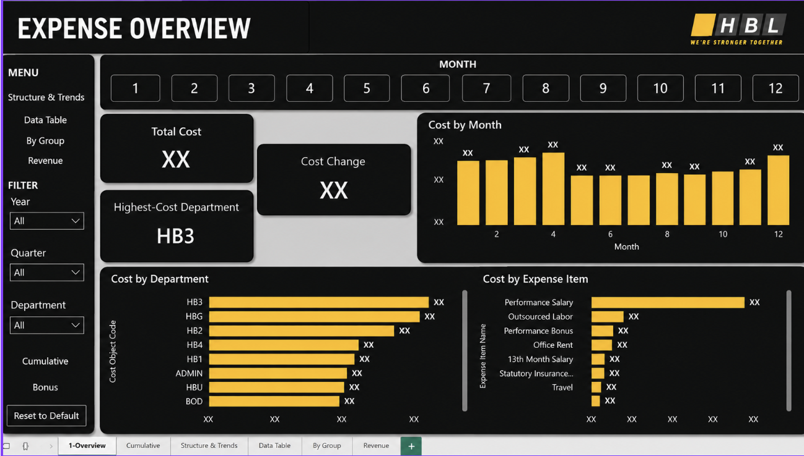

1
Executive KPI view
Total cost, cost change and highest-cost department are surfaced immediately for quick management review.
A multi-page Power BI reporting solution designed to help management monitor expenditure, identify high-cost areas and understand how spending changes across time, departments and expense categories.

How can management quickly understand total expenditure, cost movement and the main drivers of spending without manually reviewing detailed transaction-level data?
The report combines executive KPIs with interactive breakdowns so users can move from a high-level view to more detailed analysis.
Total cost, cost change and highest-cost department are surfaced immediately for quick management review.
Monthly views plus year and quarter filters make it easier to identify patterns, peaks and shifts in expenditure.
Department and expense-item views show where spending is concentrated and which categories contribute most.
Users can narrow the analysis by year, quarter, department and month to investigate specific business questions.
The report extends beyond the overview into cumulative analysis, structure and trends, detailed tables and revenue.
A KPI-first layout, consistent navigation and visual hierarchy are used to make the report practical for recurring use.
This page serves as the main reporting entry point, combining summary KPIs with trend and category views.
The top of the page answers the immediate management questions first, while supporting charts provide the context needed to investigate cost movements.
A persistent menu and clearly separated report pages make it easier for users to move between overview, trend, group-level and detailed data views.
Time and organisational filters are placed where users expect them, helping the report support recurring operational and management questions.
The dark interface with a single accent colour creates a clear visual hierarchy and keeps attention on the analytical content.
This project demonstrates the ability to structure a business reporting problem, define useful KPIs, design an interactive reporting experience and communicate management information through data visualisation.